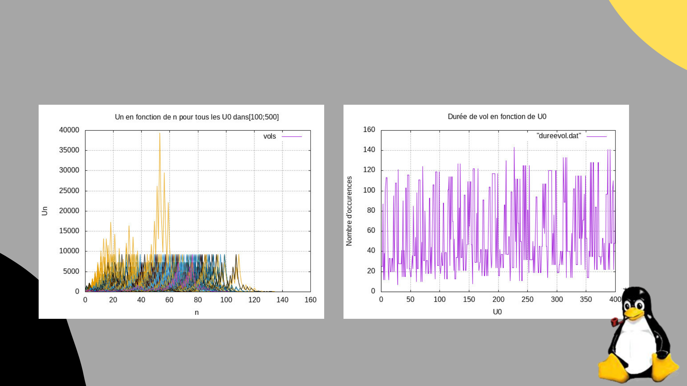
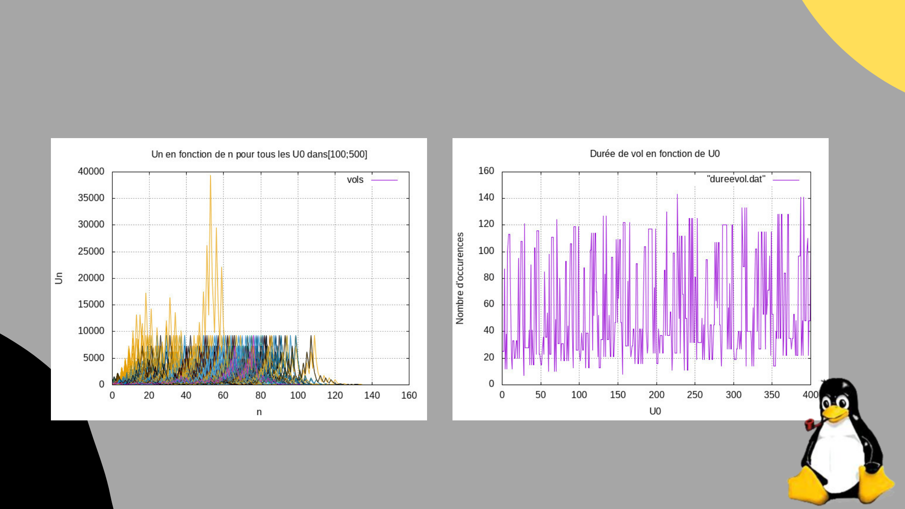
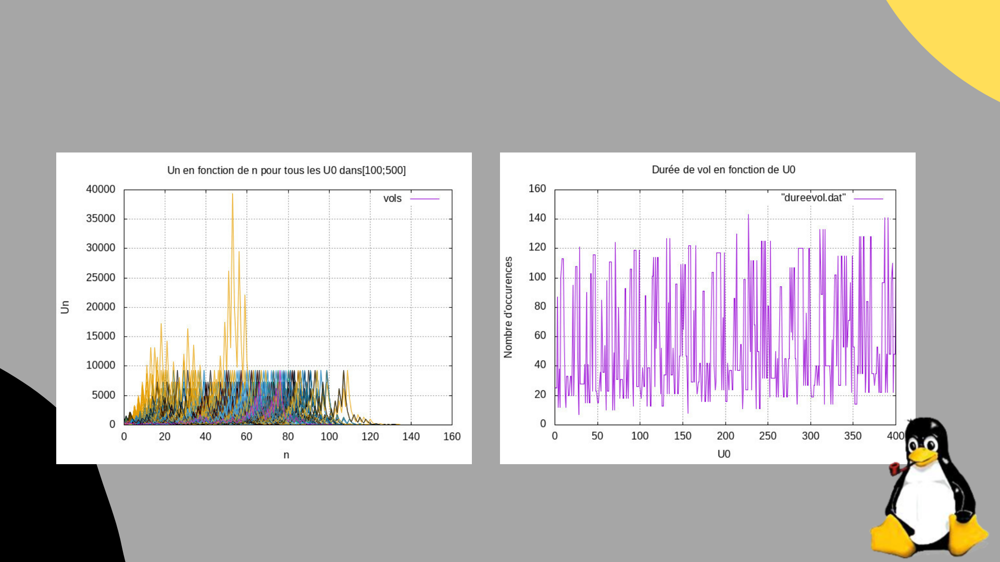

La suite de Syracuse, également connue sous le nom de conjecture de Collatz,
est un problème mathématique fascinant qui intrigue les chercheurs depuis des décennies.
Ce projet vise à analyser cette suite numérique à travers des visualisations et des explorations algorithmiques,
dans le but de mieux comprendre son comportement et ses propriétés.
Unix a servi à la gestion des fichiers et à l'automatisation, tandis que Python a permis l'implémentation des algorithmes et la création de graphiques
